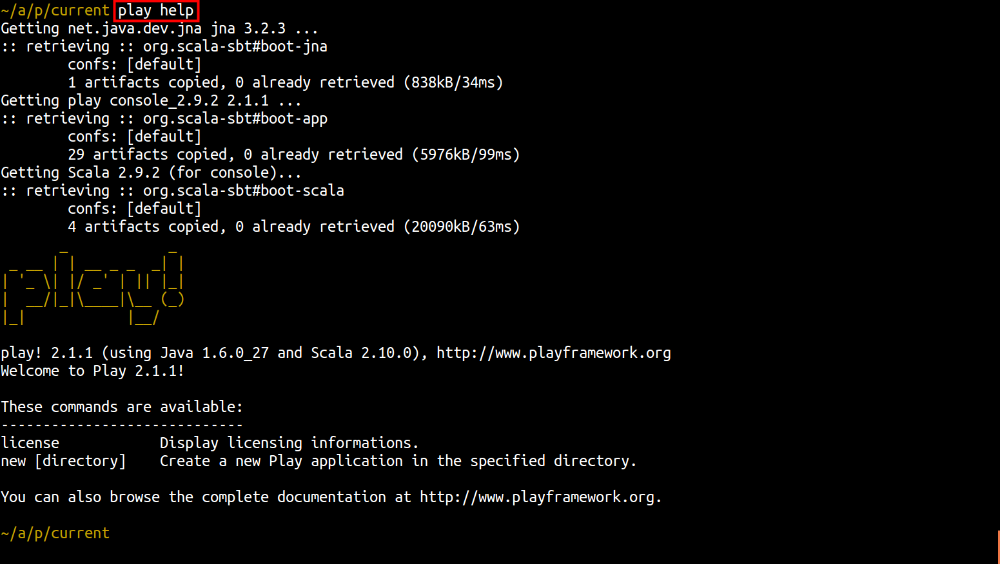

Setting up your environment
Before you get started with this workshop you will need to have:
- An Internet connection
- An Heroku account
- The Heroku toolbelt (
heroku) - A public key added to heroku (
heroku keys) - Java development environment - JDK (
javac) Play framework (
play)This section will help you set up any missing requirements for this workshop.
Note: these requiremenst are specific to this workshop. To use Heroku outside of this workshop, the minimum you need is an Heroku account and a Git client.*
Create an Heroku Account (if you dont already have one)
You can create a free account at the Heroku website. You need an account in order to deploy and manage the applications on Heroku.
- In your browser navigate to: https://heroku.com/signup
- Enter your email address
- Select
Sign Up - Check your email for a message from Heroku and navigate to the verification page given in that message.
- On the verification page, enter a suitable password for your account
Installing the Heroku Toolbelt
The Heroku toolbelt is a command line application for creating and managing your applications on Heroku. Its a really useful tool. The toolbelt also contains a Git client, although you can use your own Git client if you prefer.
When you created your account, the Heroku website directs you to download the Heroku toolbelt. It is also available from the Heroku toolbelt website if you do not have it on your development machine.
Install the Heroku toolbelt version for your operating system and test it is installed by using the following command
heroku
If the Heroku toolbelt is correctly installed, you will see a list of the Heroku tasks you can carry out.
Setting up secure access to Heroku (public key)
When you deploy your application to Heroku it uses a secure shell (SSH) connection. This ensures your code is transfered securely and allows a secure way for Heroku to confirm you are authorised to access the application. This SSH connection requires you to add a public key to your Heroku account.
The first time you work with Heroku you can use the following command to create a public key for you or upload any existing public key you may have:
heroku login
If you create your own key, ensure that the public key has your email as a comment. For example, to create a key with the email address foo@bar.com you use the following command:
ssh-keygen -t rsa -C "foo@bar.com"
To check what keys have been added to your Heroku account, using the following command:
heroku keys
If you have already create your own key, ensure that it has your email as a comment. If you have added the key to heroku and use heroku keys you should see your key listed and showing your email address.
Should you need or want to create your own public key, you can use the following command:
ssh-keygen -t rsa -C "foo@bar.com"
To add a new key to Heroku, use the following command:
heroku keys:add
If you have only one public key, this command will just add it to heroku without prompting. If you have more than one pubic key then heroku will prompt you as to which key you want to add.
If you need to add a new key to heroku, use the following command using the full path and name of the key:
heroku keys:add path/to/key.pub
Setting up Github
When you install the Heroku toolbelt it includes a Git client. You can also use any other git client you want, either command line or graphical tool.
You do need to identify yourself to Git before carrying out any commits to your local repository. You must specify git user.email and optionally specify git user.name.
To add your git name and email, either edit the ~/.gitconfig file or run the following two commands:
git config --global user.name "your name"
git config --global user.email "your.name@domain.com"
To check what has already been added to Git (some gui clients add information), you can list all the current configuration entries:
git config --list
If you are still finding your way with Git, take a look at the seperate Git and Github tutorial](http://git-and-github-workshop.herokuapp.com/).
Java SE 6 or greater
As you are building a Java application you need to have the compiler that comes with the Java Development Kit (JDK) installed. If you are not sure, you can test the java compiler is installed using the command for the Java compiler:
$ javac -version
javac 1.6.0_27
If the javac command is not recognised then download and install Java Standard Edition JDK from Oracle from the following website
http://www.oracle.com/technetwork/java/javase/downloads/index.html
Follow the install instructions for the Java development kit for your operating system on the Oracle website. You should be able to run javac from the command line without having to specify the full path. You may need to start a new command line window after the JDK installtion in order for javac to work.
Note: it is not sufficient to just have the java runtime installed:
java. Java code you work with in this tutorial needs to be compiled and therefore needs the java compiler,javac
Download & install Play framework version 2
Download the latest version of the Play framework and extract the archive to a location where you have both read and write access. For example, create a ~/apps/play folder and extract the archive there.
Note: Play updates files within its own folder, so on MacOSX and Ubuntu avoid installing play in /opt, /usr/local or anywhere else you would need special permission to write to unless you also update the play folder write permissions.*
Add Play framework to your executable path
In order to run play commands from your project folders you should add the folder you extracted Play framework into the system PATH.
On Linux and MacOSX:
Add the following text to the file ~/.profile
`export PATH=$PATH:/path/to/play20`
Load this updated PATH into your command line using source ~/.profile or open a new terminal window.
Make sure that the play script is executable, otherwise do a chmod a+x play
On Microsoft Windows
Windows uses a global environment variable. Update the PATH in the environment variables to add the path to the Play framework folder, ensure you don’t use a path with spaces. Open a new terminal to make sure the path has been updated.
Test Play framework is working
Test play is configured correctly by running the following command:
play help
When you first run play it may download extra libraries that it needs to run, so you may need to be connected to the Internet.

Assuming everything went okay, you are ready to create your first Play application.